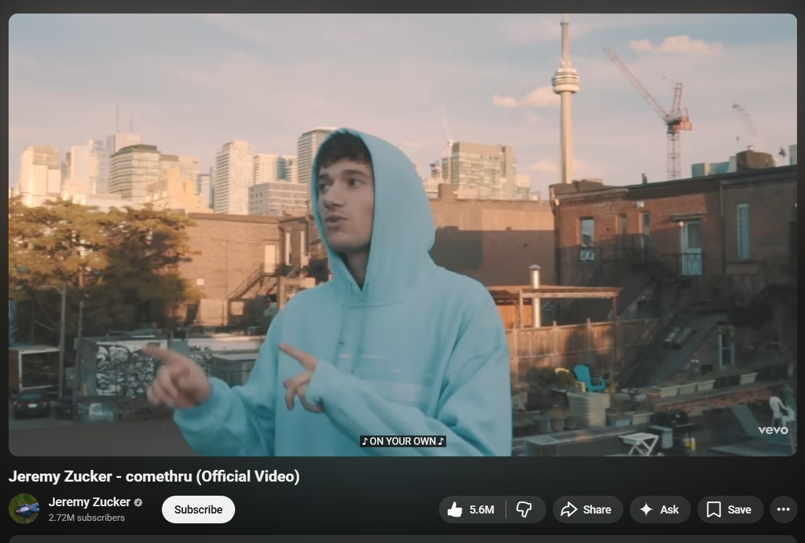
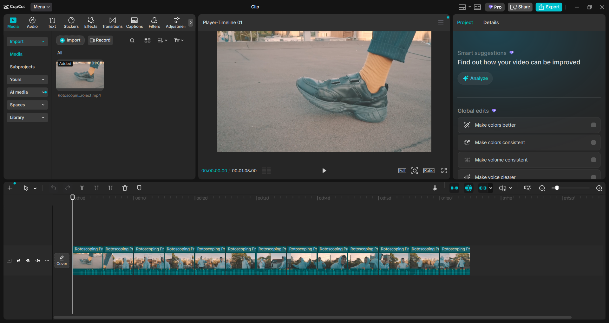
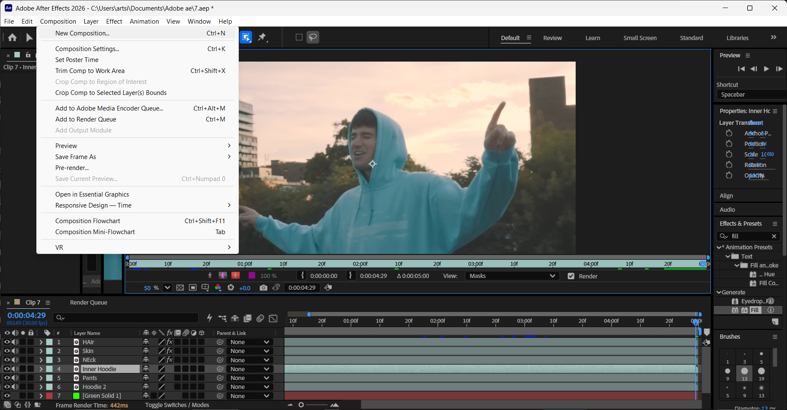
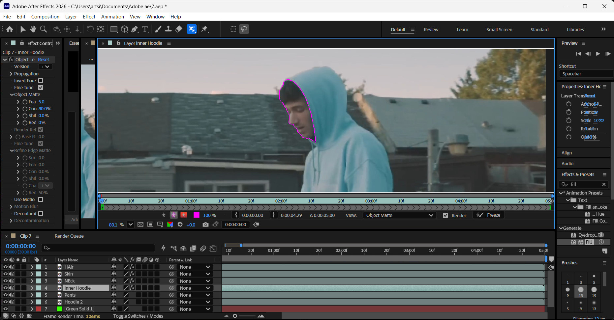
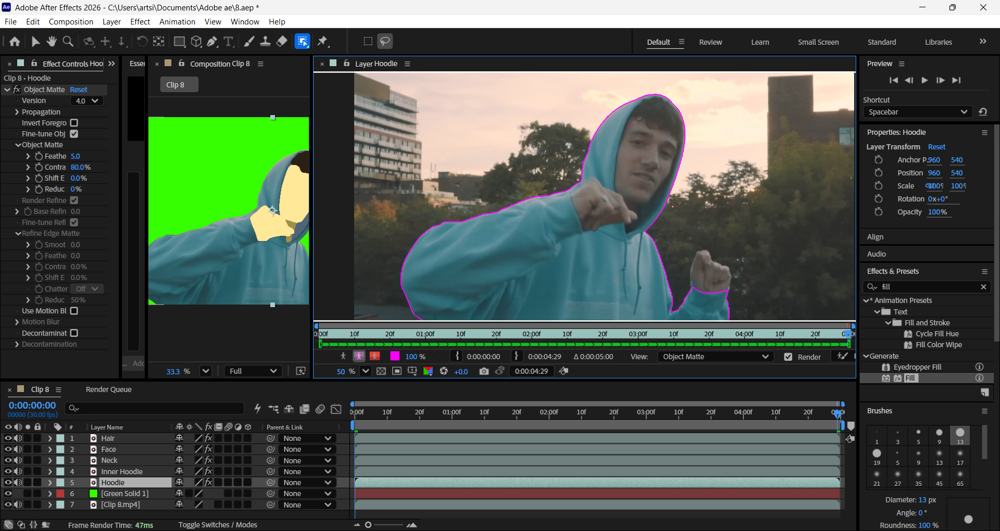
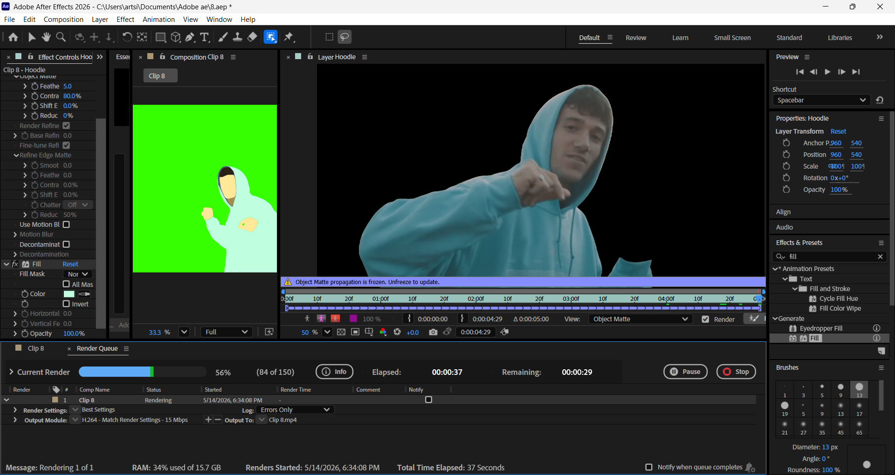
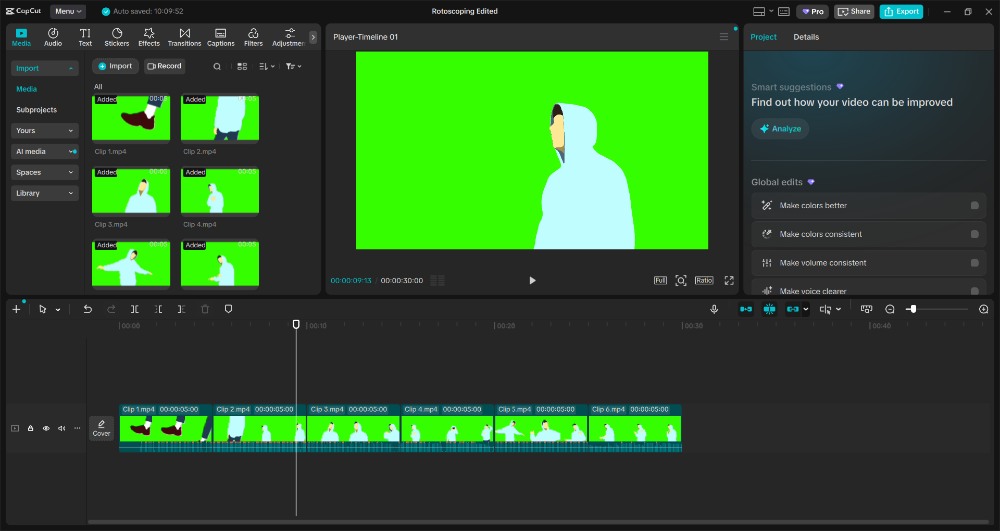
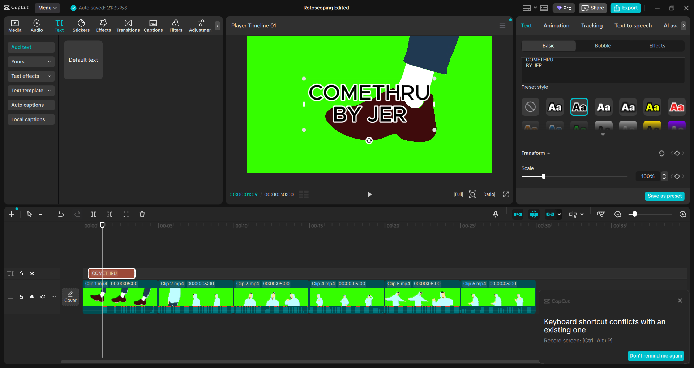

Workflow
Production Process
Here's a simple step by step guide on how I accomplised my rotoscoping project.
1

Select Source Material
Choose high-quality video with clear subject-background contrast and interesting movement patterns.
Source Material Used:
Watch Source Video
Source Material Used:
Watch Source Video
2

Cut the Video into 5-Second Clips
Use CapCut to split the selected video into 5-second segments for easier editing.
3

Create a New Composition
In After Effects, create a separate 5-second composition for each clip segment.
4

Trace Each Layer
Isolate the subject into separate layers (shirt, pants, body, hair, shoes) using the Roto Brush Tool. Freeze each layer to edit others independently.
5

Add Fill Colors to Layers
Apply solid color fills to each isolated layer (shirt, pants, hair, etc.) to prepare for stylization.
6

Render All Compositions
Export each 5 second composition through the Render Queue with consistent settings.
7

Compile All 5-Second Clips
Combine all clips in CapCut, add audio, and export in mp4 format.
8

Edit Lyrics & Background
Use Adobe Premiere Pro to add lyrics, sync them with the audio, and change background colors to enhance visual appeal.
Progress Timeline
Week 1 - 12
Week 1
Week 2
Week 3
Week 4
Week 5
Week 6
Week 7
Week 8
Week 9
Week 10
Week 11
Week 12